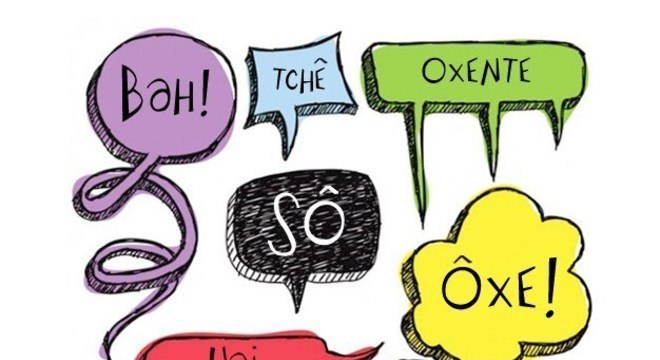

Preconceito Linguístico: Julgando Pelas Palavras

O preconceito é um problema global que permeia diversas esferas da sociedade, inclusive a linguagem. O preconceito linguístico, muitas vezes ignorado, é uma forma de discriminação baseada no modo como as pessoas falam ou escrevem. Neste artigo, exploraremos o conceito de preconceito linguístico, suas raízes e as consequências que pode ter em nossa sociedade.
O Que é Preconceito Linguístico?
O preconceito linguístico é o ato de julgar alguém com base na maneira como essa pessoa utiliza a linguagem. Isso pode se manifestar de várias formas, desde zombar de sotaques regionais até menosprezar dialetos ou variações linguísticas não padronizadas. Em última análise, o preconceito linguístico é uma forma de discriminação que está enraizada em estereótipos e ideias equivocadas sobre o que é "correto" ou "superior" em termos de linguagem.
Causas do Preconceito Linguístico:
O preconceito linguístico muitas vezes se origina da associação de determinadas formas de falar com status social, educação ou poder. Variações linguísticas são frequentemente associadas a características negativas, como ignorância ou falta de sofisticação. Esses estereótipos são perpetuados em parte pela mídia, educação formal e pressões sociais.
Consequências do Preconceito Linguístico:
O preconceito linguístico pode ter impactos significativos nas vidas das pessoas. Pode levar à exclusão social, à baixa autoestima e à limitação no acesso a oportunidades educacionais e de emprego. Quando alguém é alvo de preconceito linguístico, sua autoexpressão é cerceada, e sua capacidade de participar plenamente na sociedade é comprometida.
Exemplos de Preconceito Linguístico:
Exemplos reais de preconceito linguístico podem ser encontrados em todos os lugares, desde piadas baseadas em sotaques até a correção excessiva da fala de alguém. O riso em resposta a um sotaque regional ou a crítica a um dialeto não padrão são formas comuns de preconceito linguístico que afetam indivíduos diariamente.
Variações Linguísticas:
A diversidade linguística é uma característica natural das línguas. Cada variedade linguística reflete a riqueza cultural e a história de uma comunidade. Não existe uma forma "certa" de falar, e todas as variações merecem respeito.
Combatendo o Preconceito Linguístico:
O combate ao preconceito linguístico começa com a educação e a conscientização. Promover a compreensão de que a diversidade linguística é uma parte fundamental da riqueza cultural da humanidade é um passo importante. Encorajar o respeito pelas diferentes formas de falar e evitar julgamentos baseados na linguagem pode ajudar a construir uma sociedade mais inclusiva.
O preconceito linguístico é uma forma insidiosa de discriminação que afeta a vida de muitas pessoas. Reconhecer sua existência e trabalhar para combater estereótipos linguísticos é fundamental para a construção de uma sociedade mais inclusiva e respeitosa. A diversidade linguística é uma riqueza que merece celebração, e todos têm o direito de serem ouvidos, independentemente de como escolhem se expressar.